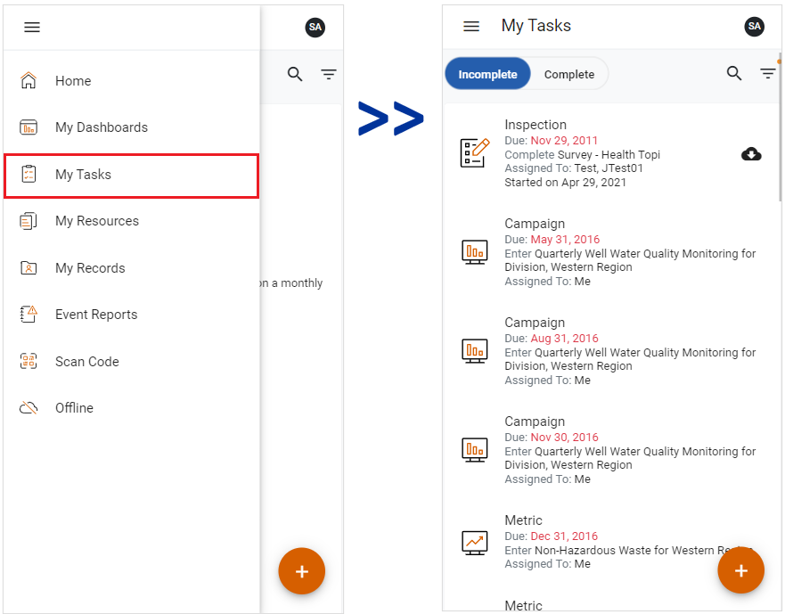

My Tasks displays items that you have created or that have been assigned to you (or to a group or team of which you are a member) to complete. From the My Tasks view, you can select and complete in-progress tasks, or create a new change request, questionnaire, appointment, absence request, or sample record. The view will also display campaign metrics that have been assigned to your group or team.
To access this view, click the side menu button and select My Tasks. The My Tasks view will open.

The My Tasks view will list overdue items first, then items that are due now or that do not have a due date, followed by items with upcoming due dates. Tasks will be displayed in chronological order.
Items in the My Tasks view are organized in tabs according to their Incomplete or Complete status. Records in the Incomplete and Complete tabs can be filtered by Type, Period, and/or Assigned To.
The My Tasks view has a Create New button that lets you create a new appointment, questionnaire, or sample.
If you are assigned a group or team action, the Findings & Actions layout will include Assigned to Group, Complete as Team, and GDDLOFB fields. Any member of the group or team will be able to complete the action. If you are a Supervisor, group or team actions will not display in your My Tasks view.